3 Class and Object Diagrams
This chapter focuses on the cornerstone of UML’s structural modelling: the Class Diagram. We will explore its fundamental components, the different types of relationships between classes, and its practical applications in both the analysis and design phases of software development. We will also briefly introduce the Object Diagram, which provides a snapshot of a class diagram’s instances at a specific moment in time.
3.1 Overview of Class Diagrams
A UML Class Diagram specifies the static structure of a system. It is the most common and essential diagram in object-oriented modelling, with its origins in earlier formalisms like Entity-Relationship-Attribute (ERA) models and the Object-modelling Technique (OMT).
Its primary purpose is to show the system’s classes, interfaces, their attributes and operations, and the relationships between them.
3.1.1 Multi-Purpose Usage
Class diagrams are versatile and used throughout the software lifecycle. Their purpose often determines which constructs are used and how they are interpreted:
- Analysis (Conceptual Modelling): In this phase, class diagrams are used to model the concepts of the application domain. These models, often called Domain Models, focus on real-world entities and their relationships, deliberately omitting software-specific details like operations or visibility. 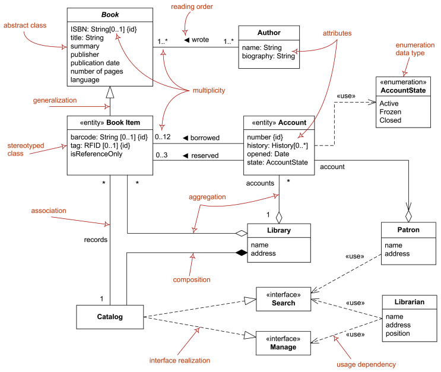
- Design (Software Specification): During design, the focus shifts to the solution space. Class diagrams, now called Diagrams of Implementation Classes, specify the software classes, including their attributes, operations (methods), and visibility. They serve as a blueprint for implementation, and class skeletons can often be generated directly from them. 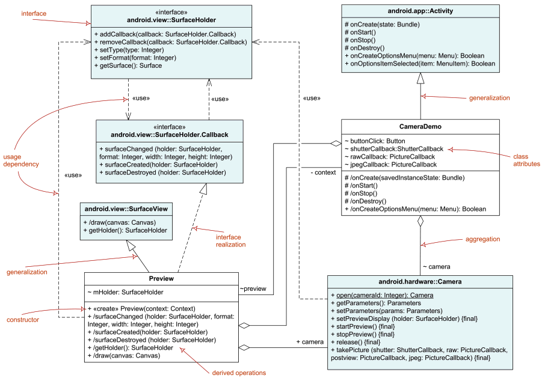
3.2 Core Concepts: The Blueprint and the Product
The object-oriented approach is built upon two fundamental concepts: the class and the object. The easiest way to understand their relationship is through an analogy: a class is like a cookie cutter, and an object is the cookie it creates.
3.2.1 The Class: A Blueprint or Template
A class is an abstraction that serves as a blueprint for creating objects. It defines a common structure and behaviour that all objects of that type will share. Just as a cookie cutter defines the shape and pattern for all cookies made from it, a class defines:
- Properties (Attributes): The data or characteristics that each object will have (e.g., a
Userclass defines that every user will have anameand anemail). - behaviour (Operations): The actions or functions that each object can perform (e.g., a
Userclass defines that every user canlogin()orlogout()).
A class is an abstraction that describes a group of objects with common properties (attributes), behaviour (operations), and relationships.
3.2.2 The Object: A Concrete Instance
An object is a concrete instance of a class. It’s a specific “thing” that exists in the system, created from the blueprint defined by its class. Just as you can use one cookie cutter to make many individual cookies, you can use one class to create many objects.
Every object has:
- Identity: It is a unique entity, distinct from all other objects, even those of the same class (e.g., two different
Userobjects,user1anduser2). - State: It holds specific values for the attributes defined in its class (e.g.,
user1’s name is “Alice”, whileuser2’s name is “Bob”). - Lifespan: It exists in the system for a certain period, from its creation to its destruction.
An object represents a specific “thing” in the modelled world that has a unique identity, a state, and a lifespan. Every object is an instance of a class.
3.3 Anatomy of a Class: A Comparative Example
A class in UML is rendered as a rectangle with three compartments: Name, Attributes, and Operations. To understand how these components are used in practice, we will compare two common but fundamentally different design patterns: a stateless utility class (Math) and a stateful service class (SearchService).
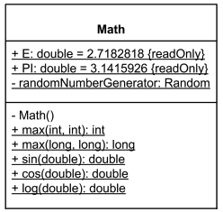
A utility class groups related functions but has no state. It is not meant to be instantiated.
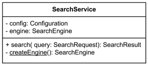
A service class encapsulates data (state) and provides operations that act on that data. It is designed to be instantiated.
3.3.1 Attributes: State vs. Constants
An attribute represents a property of a class. Our two examples illustrate the critical difference between class-level constants and instance-level state.
In the
Mathclass, attributes like+ PI: double = 3.14are constants. They are public, read-only, and their values are shared across the entire system. In a strict UML diagram, they would be underlined to indicate they are static.In the
SearchServiceclass, attributes like- config: Configurationand- engine: SearchEngineare instance attributes. This means everySearchServiceobject has its own configuration and search engine. This is the internal state of the object, which is keptprivate(-) to ensure encapsulation.
3.3.2 Operations: Static Functions vs. Instance Methods
An operation is a service that can be requested. This is where the difference between our two classes is most apparent.
In the
Mathclass, all operations like+ sin(double): doubleare static (underlined). They are self-contained functions that don’t depend on any object’s state. They are called on the class itself (e.g.,Math.sin(x)).In the
SearchServiceclass, the main operation+ search(...)is an instance method. It relies on the internal state of the object (e.g., theengineattribute) to perform its function. You must create an instance of the class to call it (e.g.,mySearchService.search(...)).
3.3.3 Constructors and Object Creation
The constructor is a special operation that creates an object. Its visibility reveals the intended use of the class.
The
Mathclass has a private constructor (- Math()). This is a deliberate design choice to prevent instantiation. You cannot create aMathobject, reinforcing its role as a purely static utility class.The
SearchServiceclass would have a public constructor (often implicit if not drawn). This allows users to create multiple instances of the service, each with its own state.
By comparing these two examples, we can see how the same UML building blocks, classes, attributes, and operations, can be used to model fundamentally different design patterns, each suited for a different purpose.
3.4 Relationships Between Classes
Relationships describe the connections between classes.
3.4.1 Association
An association is a structural relationship that specifies that objects (instances) of one class are connected to objects of another. It is the most fundamental way to represent connections in a class diagram.
An association is typically drawn as a solid line connecting two classes. Several adornments can be added to this line to specify the relationship with greater precision.
Let’s break down the components of an association using the example above:
Association Name: The name of the association is typically a verb that describes the relationship. It is placed near the middle of the association line. In our example, the name is
Wrote. A small triangle can be added to indicate the reading direction (e.g., “Professor Wrote Book”).Association Ends (Roles): Each end of the association connects to a class and represents a “role” that the class plays in the relationship. These ends can have several properties:
Role Name: An optional name describing the role played by the class at that end. For example, the
Professorclass plays the role ofauthor, and theBookclass plays the role oftextbook.Multiplicity: This is a mandatory constraint that specifies how many instances of the class can participate in one instance of the association. In the example,
1..*on theauthorside means aBookmust be written by at least oneProfessor. The0..*on thetextbookside means aProfessorcan have written zero or manyBooks.Navigability: This specifies whether instances of one class can be efficiently accessed from an instance of the class at the other end of the association. It is a critical concept for bridging the gap between design models and implementation. The notation is as follows:
- An open arrowhead on an association end indicates that it is navigable.
- A small ‘x’ on an end indicates it is explicitly not navigable.
- No adornment on an end means that navigability is unspecified.
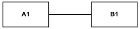
Both ends of the association have unspecified navigability. 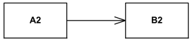
A2 has unspecified navigability while B2 is navigable from A2. 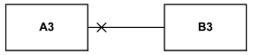
A3 is not navigable from B3 while B3 has unspecified navigability. 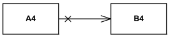
A4 is not navigable from B4 while B4 is navigable from A4. 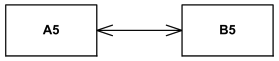
A5 is navigable from B5 and B5 is navigable from A5. 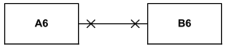
A6 is not navigable from B6 and B6 is not navigable from A6. It is important to understand the sometimes confusing semantics behind non-navigability in the UML specification. While one definition states that a non-navigable end means “access from the other ends may or may not be possible, and if it is, it might not be efficient,” this can be functionally ambiguous.
A more formal, though sometimes contradictory, definition in UML links navigability to ownership: an end is considered navigable if it is owned by the opposite class. This highlights an advanced concept where a navigable role is often implemented as an attribute in the opposite class.
Ownership: An association end can be formally “owned” by either the class at the opposite end or by the association itself. This is an advanced concept that hints at the implementation. Ownership by the opposite class is indicated by a small filled circle (dot) at the end of the line. This notation implies that the role will be implemented as an attribute in the owning class.
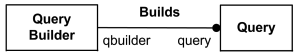
An example of ownership in a UML association. In the example above, the dot on the
Queryend signifies that thequeryrole is owned by theQuery Builderclass. This suggests that theQueryBuilderclass will contain an attribute namedqueryof typeQuery.
3.4.2 Aggregation: The “Has-A” Relationship
Shared aggregation, commonly known as Aggregation, represents a “weak” whole-part relationship. It signifies that a composite object groups together a set of part instances, but these parts can exist independently of the whole.
Aggregation has the following key characteristics:
- It is a binary and asymmetric relationship; only one end of the association (the “whole”) can be marked as an aggregate.
- The relationship is transitive, meaning aggregation links must form a directed, acyclic graph. An object cannot be a direct or indirect part of itself.
- The “part” can be included in several composites simultaneously, and if the composite “whole” is deleted, the part may still exist.
Notation: Aggregation is depicted as an association with a hollow diamond at the “whole” or aggregate end of the line.
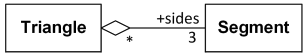
In the example above, a Triangle is an aggregate of exactly three Segment. The * multiplicity at the Triangle end signifies that a Segment can be a part of multiple triangles or none at all. Deleting a Triangle object does not delete the Segment objects.
3.4.2.1 Common Mistakes with Aggregation
{#sec-common-mistakes}
It is crucial to use aggregation correctly to avoid creating logically inconsistent models. Here are two common mistakes to avoid:
Mistake 1: Marking both ends as an aggregate. Aggregation is an asymmetric relationship. The UML specification does not allow a diamond on both ends of an association line. This is an incorrect attempt to model a many-to-many relationship where, for example, a Student has a list of Course and a Course has a list of Student. The correct way to model this is with a simple association or an association class.
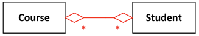
Mistake 2: Creating cyclic relationships. Aggregation links must form a directed, acyclic graph. This means a composite object cannot be a direct or indirect part of itself. Creating a cycle where Student is part of Course and Course is part of Student is a logical error.
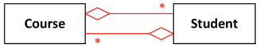
3.4.3 Composition: The “Owns-A” Relationship
Composition represents a “strong” form of aggregation with co-incident lifetime of the parts with the whole. It’s a whole/part relationship where a part can belong to at most one composite (whole) at a time.
Notation: Composition is depicted as an association with a filled black diamond at the aggregate (whole) end.
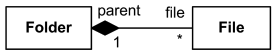
Composition has the following key characteristics:
- Existential Dependency: If a composite (whole) is deleted, all of its composite parts are normally deleted with it. In the example above, if a
Folderis deleted, allFiles it contains are also deleted. - Exclusive Ownership: A part can only belong to one whole at a time. A
Filecannot be in two differentFoldersimultaneously. - Figurative Interpretation: In domain models, the concept of “deletion” should be interpreted figuratively. For example, if a
Hospitalis composed ofDepartment, closing the hospital also implies closing all its departments, even if the objects are not physically destroy.
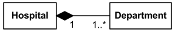
It’s also important to note that the UML specification does not dictate how or when the parts of a composite are created. Furthermore, a part can sometimes be removed from a composite before the whole is deleted, allowing it to survive independently in specific cases.
Interestingly, the multiplicity of the composite (whole) end can be 0..1, which means that a part is allowed to exist as a “stand-alone” instance, not owned by any specific composite at a particular time. Because Composition is a strong form of aggregation, it is subject to the same structural rules, and the common mistakes, previously discussed, apply to it as well.
3.4.4 Generalization (Inheritance)
Generalization is a directed, taxonomic relationship between a more general classifier (the superclass) and a more specific classifier (the subclass). Each instance of the subclass is also considered an instance of the superclass, which is why this is informally known as an “Is A” relationship (e.g., a Patient is a Person).
Notation: Generalization is shown as a solid line with a hollow triangle arrowhead pointing from the subclass to the superclass.
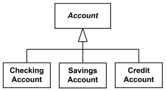
3.4.4.1 Inheritance Mechanism
Generalization is the conceptual relationship, while inheritance is the mechanism that implements it. Through inheritance, a subclass incorporates the structure (attributes) and behaviour (operations) of its superclass. In UML, this means the subclass inherits the features of the more general classifier, and any constraints applying to the superclass also apply to the subclass.
3.4.4.1.1 Multiple Inheritance
UML implicitly allows a class to have more than one superclass, a concept known as multiple inheritance. This is often used when combining orthogonal classification schemes (e.g., classifying an Employee by contract type and by role).
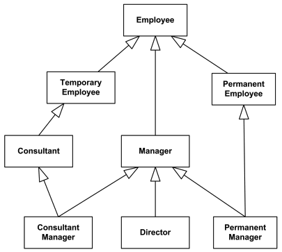
However, multiple inheritance introduces complexities, most famously the “diamond problem.” If a class inherits from two superclasses that both provide an implementation for the same operation, it becomes ambiguous which implementation the subclass should use. UML does not define a standard resolution for this issue, leaving it to the implementation language (e.g., Java prohibits multiple inheritance of classes to avoid this).
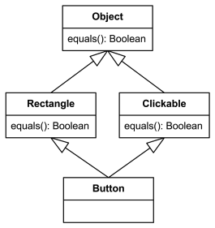
3.4.4.2 Generalization Sets
To add more precision to classification hierarchies, UML provides the Generalization Set. This is a way to group related generalization relationships and apply constraints to them. The two main constraints are:
- {complete} vs. {incomplete}:
{complete}: Specifies that every instance of the superclass must also be an instance of at least one of the subclasses in the set. There are no “standalone” instances of the superclass.{incomplete}: Allows for instances of the superclass that do not belong to any of the specified subclasses. This is the default.
- {disjoint} vs. {overlapping}:
{disjoint}: Specifies that an instance of the superclass can be an instance of at most one of the subclasses in the set.{overlapping}: Allows an instance of the superclass to be an instance of multiple subclasses in the set simultaneously.
A generalization set that is {disjoint, complete} is known as a partition. This means every instance of the superclass is an instance of exactly one of the subclasses.
These constraints are written near the generalization arrowhead, often next to a dashed line connecting the generalization arrows.
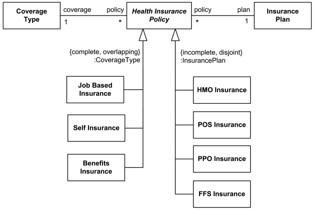
In the example above, the Health Insurance Policy has two different generalization sets:
- The set based on
CoverageTypeis{complete, overlapping}. This means every policy must have at least one coverage type, and a single policy could potentially be both aJob Based Insuranceand aSelf Insurance. - The set based on
InsurancePlanis{incomplete, disjoint}. This means a policy can be at most one type of plan (e.g., eitherHMOorPPO, but not both), and there might be other types of plans not listed in the diagram.
3.5 Object Diagrams: A Snapshot of Reality
While a class diagram models the abstract types, an Object Diagram shows a snapshot of the concrete instances in a system at a particular point in time. It provides a real-world example of the structures defined in a class diagram.
An object diagram shows:
- Objects: Instances of classes.
- Slots: The current values for the attributes of each object.
- Links: Instances of the associations between classes.
Object diagrams are invaluable for illustrating complex class diagrams and validating that your abstract model can represent real-world scenarios correctly.
3.5.1 Representing Instances
In UML, objects are rendered as instance specifications. The notation is flexible, allowing you to show as much or as little detail as necessary.
The most complete notation is InstanceName : ClassName :: Namespace, with all the name underlined.
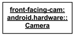
Here are the common variations:
- Named Instance:
order12 : Order- An object namedorder12of theOrderclass. - Anonymous Instance:
:Order- An anonymous (unnamed) object of theOrderclass. - Instance of Unknown Class:
newPatient :- An object namednewPatientwhose class is either unknown or not specified. - Fully Specified Instance:
front-facing-cam : android.hardware :: Camera- Shows the instance name, class, and the package it belongs to.
3.5.2 Showing an Object’s State (Slots)
The primary purpose of an object diagram is to show the state of objects at a specific moment. This is done by listing slots, which are the attribute names followed by an = and their current value.
The type of the attribute can also be specified.
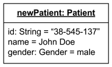
In the example above, the newPatient object shows the following slots:
- The attribute
id, of typeString, has the value"38-545-137". - The attribute
namehas the value"John Doe". - The attribute
gender, of typeGender, has the value"male".
This notation provides a clear and concise snapshot of an object’s state at a point in time.
3.5.3 Putting It All Together: A Complex Example
Object diagrams truly shine when they are used to visualize a snapshot of a complex, real-world system. They serve as a powerful tool to validate that the static model (the class diagram) can accurately represent the dynamic state of the application at runtime.
The diagram below shows a snapshot of a user authentication module at a specific moment:
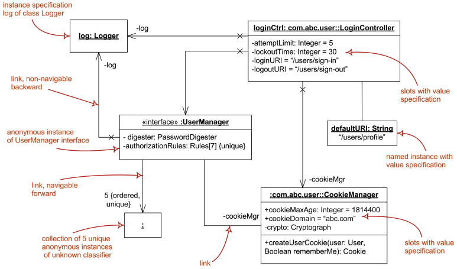
This single diagram illustrates several key concepts simultaneously:
- Named and Anonymous Instances: We can see named instances like
loginCtrland anonymous instances like the:UserManagerinterface. - Slots with Values: Objects like
loginCtrland:CookieManagershow their internal state with specific values assigned to their attributes (e.g.,attemptLimit = 5). - Links: The lines connecting the objects are links, representing runtime instances of associations. They can show roles (
-cookieMgr) and navigability. - Collections: The diagram even shows a collection of five anonymous instances, demonstrating how multiplicity is represented at the object level.
By creating such diagrams, developers can reason about specific scenarios, debug potential issues, and communicate the runtime structure of the system to other team members with a high degree of precision.